2024年10月 回覧板
目次
- 1. 市内一斉清掃用ボランティア袋
- 2. 市内一斉清掃の実施について（依頼）
- 3. 「地域安全ニュースふれあい第３４３号」及び「犯罪発生地図」
- 4. 「第１回自然散策会」チラシ
- 5. 全国瞬時警報システム（Ｊアラート）全国一斉情報伝達試験の実施について（お知らせ）
- 6. 令和６年度「介護予防講演会」チラシ
- 7. 「秋のトショロ月間」チラシ
- 8. 「古紙回収促進活動」チラシ
- 9. 「第３７回市民会館まつり」チラシ
回覧文書
1. 市内一斉清掃用ボランティア袋
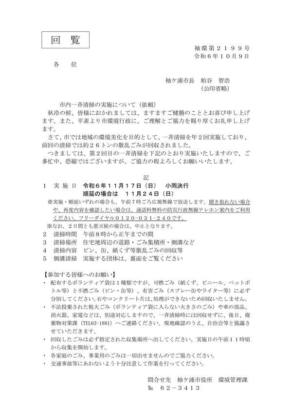
2. 市内一斉清掃の実施について（依頼）
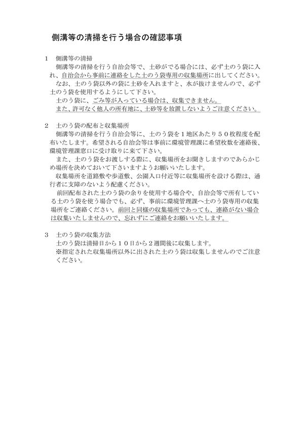
3. 「地域安全ニュースふれあい第３４３号」及び「犯罪発生地図」
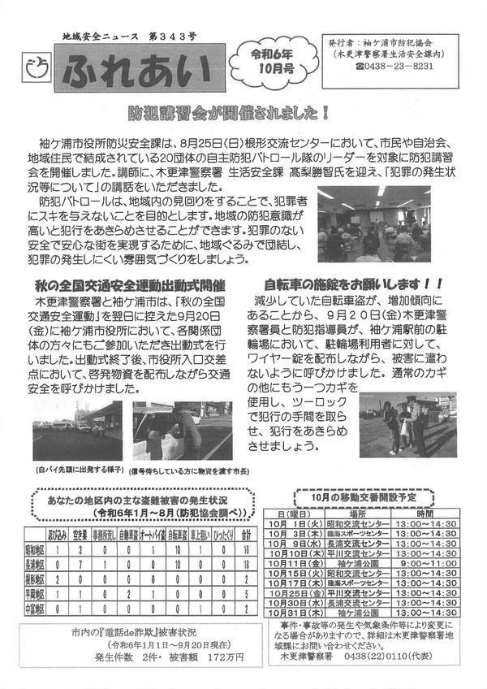
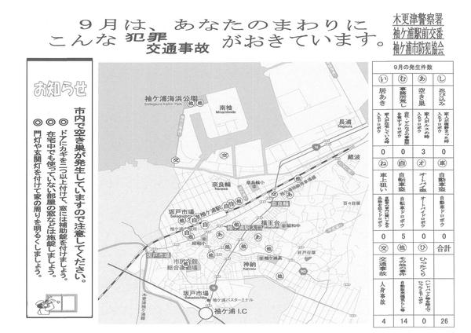
4. 「第１回自然散策会」チラシ
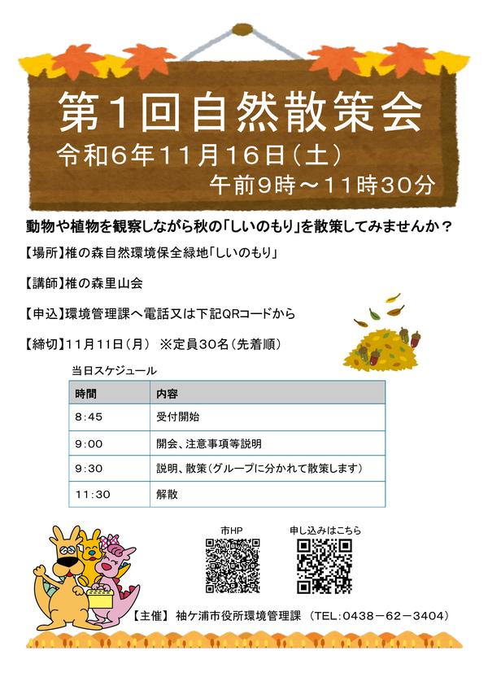
5. 全国瞬時警報システム（Ｊアラート）全国一斉情報伝達試験の実施について（お知らせ）
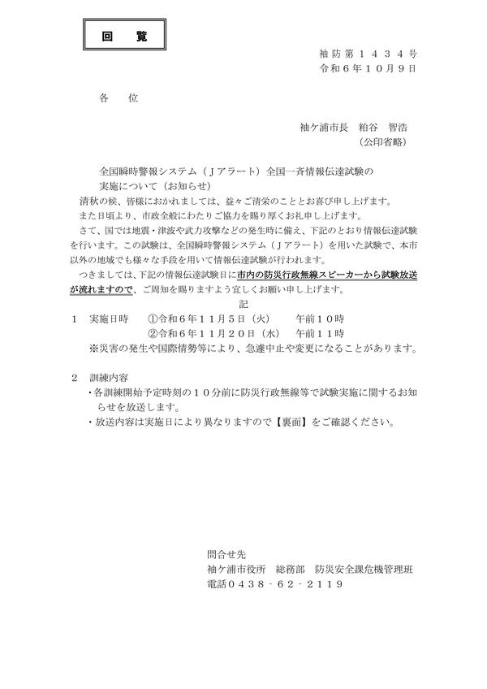
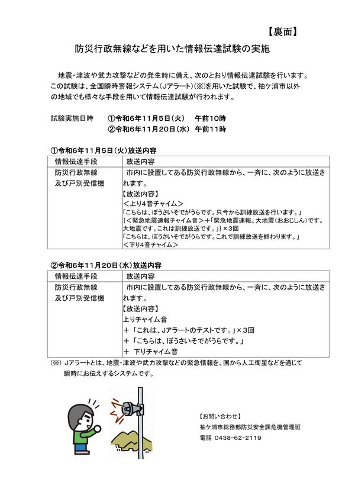
6. 令和６年度「介護予防講演会」チラシ
7. 「秋のトショロ月間」チラシ
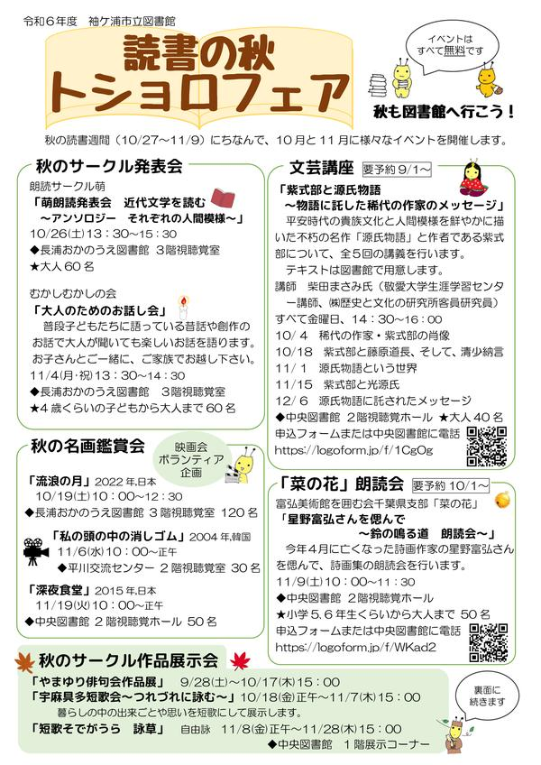
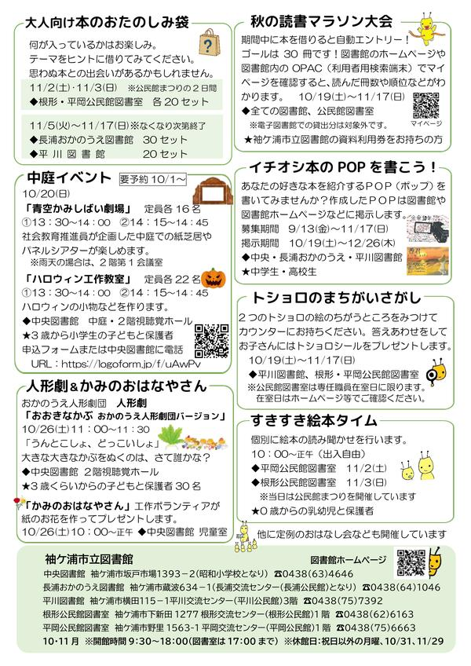
8. 「古紙回収促進活動」チラシ
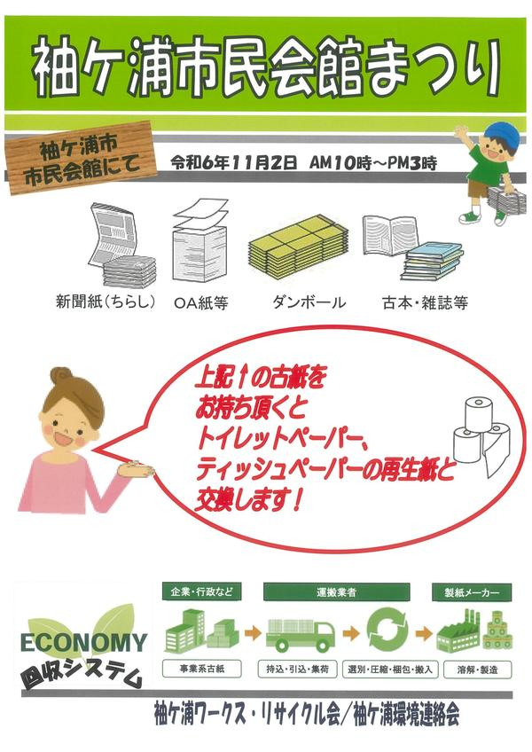
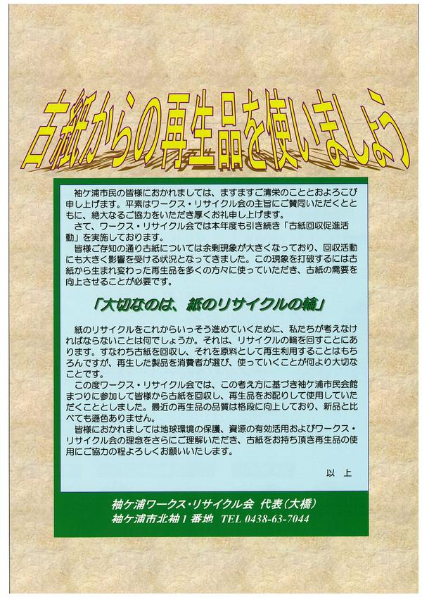
9. 「第３７回市民会館まつり」チラシ
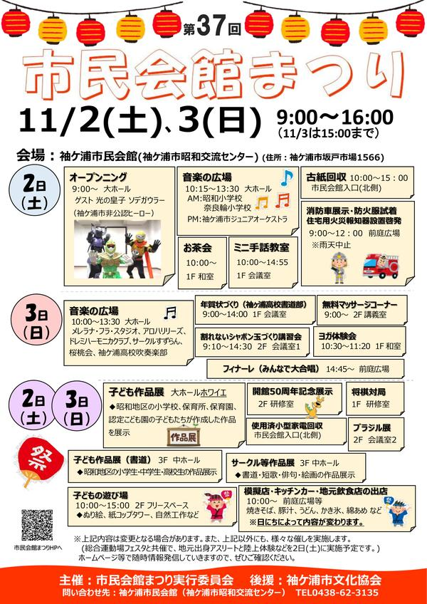